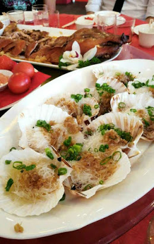

Over mij
Ik ben nu 4 weken oud en heel erg gegroeid! Ik ben nu 54 cm lang, weeg 4400 gram en draag maatje 56. Ik heb nog heel weinig haar en mijn ogen zijn blauw/grijsachtig. Ik begin basiskleuren van elkaar te kunnen onderscheiden, maar ik zie nog wel enkele grijstonen. Een fopspeen vind ik erg raar dus die spuug ik elke keer uit. Ook houd ik niet van muggen en om te moeten zitten, ik wil veel liever opgetild worden! Wel houd ik van: in slaap vallen in de auto, mijn blauwe muziekdoos, egel knuffeltje, enorme panda knuffel(bijna groter dan mijn zus!) en in de achtertuin schommelen wanneer het zonnig is.
Chinees sterrenbeeld
5 februari 2019 - 24 januari 2020
Mensen die geboren worden onder het teken van het Varken zijn levengenieters en alles wat het heeft te bieden. Ze zijn eerlijk en bedachtzaam en verwachten hetzelfde van andere mensen.

Mijn geboortefeest
Het is een Chinese gewoonte om tijdens de zwangerschap niet te mogen verhuizen en de eerste 4 weken geen bezoek te krijgen, alleen dichte familieleden mochten al wel op bezoek komen. Ook ik kon dus pas bezoek krijgen na een maand. Ook is het een Chinese traditie om na de 4 weken een geboortefeest te houden, een zogenaamd maandfeest. Mijn geboortefeest werd gevierd in Shanghai Garden, een chinees restaurant in Delft. Op mijn geboortefeest waren heel veel familieleden en vrienden uitgenodigd van wie ik een rode envelop heb gekregen. Het eten, dat geserveerd werd, was erg uitgebreid: geroosterde varken, gestoomde vis, coquilles, mihoen, rode eieren en onbeperkt drinken. Na de maaltijd kregen de gasten van ons een potje aardbeien jam, met een babyblauwe deksel.
hongbao 紅包
De rode envelop met geld (hóngbāo) wordt gegeven tijdens bruiloften, geboortes en feestdagen, zoals tijdens het Chinees Nieuwjaar. In China is rood de kleur die geluk symboliseert en mensen tegen boze geesten beschermt. Wanneer je in dit geval een hong bao geeft, geef je jouw gelukswensen aan de ouders van de pasgeboren baby.